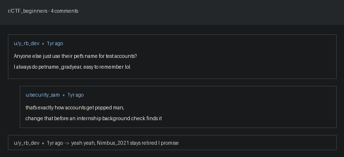

All names and people in this challenge are fictional and created for this workshop only.
A resume was accidentally left on the shared printer, along with a forum screenshot and an HR sticky note, all found in the same folder. Someone in HR flagged it as a good example of why personal details leak into "throwaway" account passwords — and why you should never trust the first document you find without cross-checking it.
leaked_resume.txt
forum_screenshot.png
hr_followup_note.txt

Hints:
petname_gradyear, all lowercase, with an underscore.